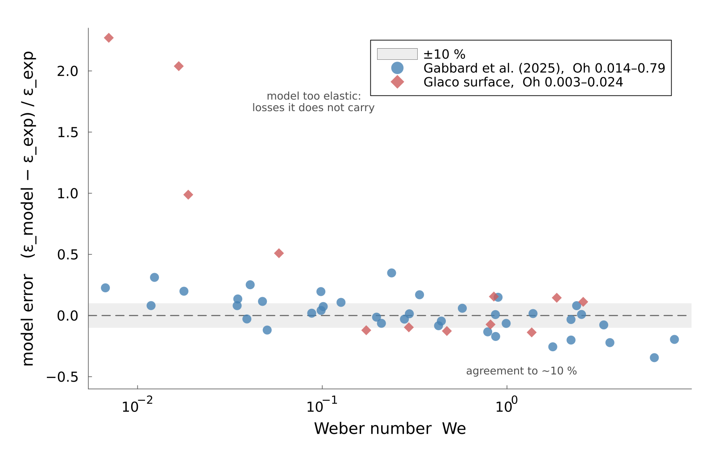
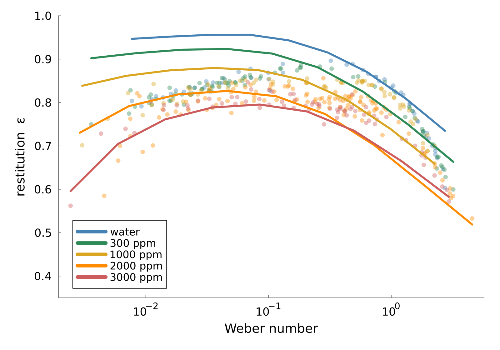

Validation
The model is checked against three independent campaigns: Newtonian drops over $\mathrm{Oh} \in [0.014, 0.79]$ and $\mathrm{Bo} \in [0.016, 0.071]$; water and four polymer solutions of rising concentration; and water on two superhydrophobic substrates, Glaco and black silicon, reaching $\mathrm{Bo} = 10^{-4}$. Together they span a factor of 250 in Ohnesorge and 3000 in Bond.
Current residuals are not quoted here. They move whenever a sweep is re-run at a finer resolution or a measurement convention is sharpened, and a number printed in prose does not move with them. The figures below are regenerated from the sweep that produced them, so they cannot disagree with the code; the tables behind them live in outputs/csv/. What this section states instead is the structure of the agreement, which is stable.
Against a 3000 ppm shear-thinning solution, a Newtonian drop at the same zero-shear viscosity does not rebound at all, so the measured rebound exists because the fluid thins. The Carreau–Yasuda parameters come from that fluid's own rheometry.
Where the model stops
Agreement is not uniform in Weber number, and the place it fails is worth knowing before trusting a number.
The two Newtonian campaigns barely overlap in Ohnesorge and Bond, yet compared against the same quantity they agree about where the model works and about where it does not.

Above $\mathrm{We} \approx 0.1$ the model tracks both campaigns with no consistent sign of error. Below it the model runs high in both, and the excess grows as the impact gets gentler. The sign is the informative part: the disagreement is one-directional, so it is a missing loss rather than scatter.
The reason is structural. This model dissipates energy only in the bulk of the drop. It carries no work of adhesion, no contact-angle hysteresis and no dissipation in the air film, and none of those losses shrink as the impact gets gentler. The kinetic energy does. So their share grows as $\mathrm{We}$ falls, and a model without them returns a bounce that is too elastic: as $\mathrm{We} \to 0$ restitution here tends to a finite ceiling set by the bulk damping alone, where a real drop settles onto the surface instead. A single Weber-independent loss does not account for the size of the effect either, so drop radius enters as well; no correction is fitted here.
Use the model above $\mathrm{We} \approx 0.1$. Below that it is an upper bound on restitution rather than an estimate of it.
Resolution is not the explanation, which matters because under-resolution is the first thing to suspect. Restitution is converged in both truncations at the conditions where the disagreement is largest — Resolution and Convergence gives the sensitivities — so refining the discretisation does not move the model toward the data.
Whether an impure liquid explains it is a live question rather than a settled one. Lowering surface tension and raising viscosity both reduce restitution, in the right direction and of roughly the right size; the sensitivities are in outputs/figures/figure_surface_tension_viscosity.png. Contact-line pinning, which this model also omits, produces the same one-directional low-Weber signature, and the two cannot be separated by a single fluid on a single substrate.
One model across four decades of viscosity
The sharpest test is not any single fluid but the five together. Water and four polymer solutions of rising concentration are separate liquids only in their rheology: the same equations, the same discretisation and the same contact treatment run on all of them, and the only thing that changes from one curve to the next is the measured $\eta(\dot\gamma)$. Nothing is fitted to any impact.

Zero-shear Ohnesorge runs from 0.0068 for water to 57 for the 3000 ppm solution — a factor of $8\times10^{3}$, spanning the regime where a drop barely notices its own viscosity to the regime where a Newtonian drop of the same viscosity would not rebound at all. Restitution agrees throughout, and the residuals fall monotonically with concentration: the fluids whose behaviour depends most on shear thinning are the ones the model reproduces closest. Water is the outlier, and it is the one fluid in the set with a clean, mobile, low-viscosity interface — the fluid where a surface film would dominate the dissipation budget, and where the model has the least bulk damping to hide behind.
That monotonicity is the load-bearing result. A fault in the discretisation, the contact treatment or the postprocessing would not spare the fluid four orders of magnitude more viscous, because the same code runs both. Whatever is missing is specific to the interface, not to the solver.
The five curves separate most at low Weber number and converge at high. A hard impact thins the concentrated fluids most, stripping away the viscosity that distinguished them at rest, and the experiments converge the same way.